Juan Claimed
Six figures covering request flow, the eligibility engine's decision logic, eGovPH API integration points, the data model, and the deploy pipeline — the citizen-facing benefits matcher built for a hackathon centered on eGovPH platform integration.
Figure 1. System Overview
One request path from browser to database, plus the eGovPH platform the backend is actually, live, wired into.

Frontend → Backend → PostgreSQL, eGovPH, and Vercel Blob
The eGovPH Platform box on the right isn't aspirational — egovApi.service.ts makes real HTTP calls out to it for SSO, eMessage, and AI Core, exercised by actual routes in the product (sign-in, benefit-publish SMS, translate-while-authoring); Figure 4 breaks down exactly which endpoints. The frontend never talks to Postgres, eGovPH, or Blob directly — every read or write is mediated by the backend's service layer. The dashed line to Vercel Blob is deliberately drawn apart from the solid "fetch" flows: the file's actual bytes go straight from the browser to Blob on a separate upload path (client-direct, using a short-lived token the backend issues), and only the resulting URL and metadata round-trip back through the backend to be saved — the full upload sequence is documented in the project's GitHub repository.
Figure 2. eGovPH Sign-in Sequence
A real, working eGovPH SSO login — one exchange code becomes this backend's own JWT, and seeds the citizen's first answers along the way.

Citizen → Frontend → Backend → eGov SSO → Database, nine steps end to end
Every step here is a real network call against eGovPH's own SSO API (hackathon-sso.e.gov.ph), not a mocked login screen — steps 3 and 5 are live requests to eGov's servers with our partner credentials, and step 6's profile payload is genuine eGov identity data. The token the frontend ends up with (step 9) is this backend's own JWT, signed with JWT_SECRET — eGov's access_token from step 4 is single-use and never leaves the backend. Steps 7–8 are what make eGovPH sign-in more than authentication: known profile fields (date of birth, residence, name) are written straight into the citizen's answers on first login, so the eligibility quiz never re-asks something eGov already told us.
Figure 3. Eligibility Engine — Leaf Evaluation
A missing answer is never an automatic fail — it's a fail only if another condition has already ruled it out.

Decision flow for evaluating a single eligibility condition
An unanswered field only becomes a hard NOT_ELIGIBLE when it's hidden by its parent field — a follow-up field whose own visibility condition has already resolved against the applicant, so asking it can no longer change anything. Otherwise a missing answer is PENDING: it keeps resurfacing in "Answer More" because it could still tip the outcome either way. Once a field does have an answer, it's compared straight against the condition's operator to resolve MATCHED or NOT_ELIGIBLE. Applies identically to a signed-in citizen and to a guest's in-browser answers. This diagram is one condition — a benefit's full eligibility rule is a tree of these, and the same evaluation repeats for every condition in it. One unmatched condition anywhere in the tree is enough to make the whole benefit NOT_ELIGIBLE; only once every condition comes back MATCHED (and none are still PENDING) does the benefit itself resolve to MATCHED — how ALL/ANY groups combine these per-condition results is covered in the project's GitHub repository.
Figure 4. eGov API Integration Points
Three eGovPH products, actually called by live routes in the product — not credentials sitting unused.

egovApi.service.ts → SSO, eMessage, AI Core
This is the actual eGovPH integration surface of the product, end to end: a citizen signing in with SSO, an agent publishing a benefit and the platform pushing eMessage SMS to every citizen who now qualifies, and an admin drafting a field or benefit in English and getting a Tagalog translation from AI Core with one click. Each is exercised by a real feature a user can click through today, not a health-check ping — try any of the three in the live app and it round-trips through eGovPH's own sandbox APIs. All three calls fail closed and silently — a failed API request is logged, never something the user sees break.
Figure 5. Data Model
Two parallel condition trees over the same reusable fields: one decides benefit eligibility, the other decides field visibility.
![Full entity relationship diagram. A Benefit belongs to a Department and references a Scope; its eligibility is a Benefit Rule Group tree of Benefit Field Conditions, each pairing a Field with a Condition Operator. Separately, a Field's own visibility is controlled by a Dynamic Rule Group tree of Dynamic Field Conditions, structured identically but keyed to the field instead of the benefit. Fields carry a GLOBAL or FOLLOW-UP classification, optional Field Options, and an optional Hierarchy with Hierarchy Levels and Hierarchy Nodes. A User belongs to a Scope and has many User Field Answers against Fields. A Benefit also has Requirements, Utilization records, and Attachments.](./img/db_erd.png)
Full entity relationship diagram
Two structurally identical condition-tree systems, kept deliberately separate: a Benefit Rule Group tree (over Benefit Field Condition) decides whether a benefit matches, while a Dynamic Rule Group tree (over Dynamic Field Condition) decides whether a single FOLLOW-UP-classified field is even shown — that's the actual mechanism behind an anchored field only appearing once its parent is answered a specific way, not a simple parent pointer. Both trees bottom out in the same reusable Field table, which is also where Field Options (select choices) and Hierarchy/Hierarchy Levels/Hierarchy Nodes (PSGC location, business-sector taxonomies, ...) attach. A citizen's User Field Answers reference that same Field table, so one answer can satisfy conditions in both trees at once.
Figure 6. Deployment Pipeline
A push builds once and lands on the VPS as a pull, never a rebuild on the server.

Dev push → GitHub Actions → registry → staging/prod VPS → Nginx
The two VPS compose files only ever pull — no build:, no bind mount, no git checkout on the server. Each push tags images two ways: a floating latest/staging tag plus an immutable <branch>-<timestamp>-<sha> tag, so rolling back is re-pointing the compose file at an older tag, not re-building. Postgres and Prisma Studio have no public port in either stack — only Nginx is reachable from outside.